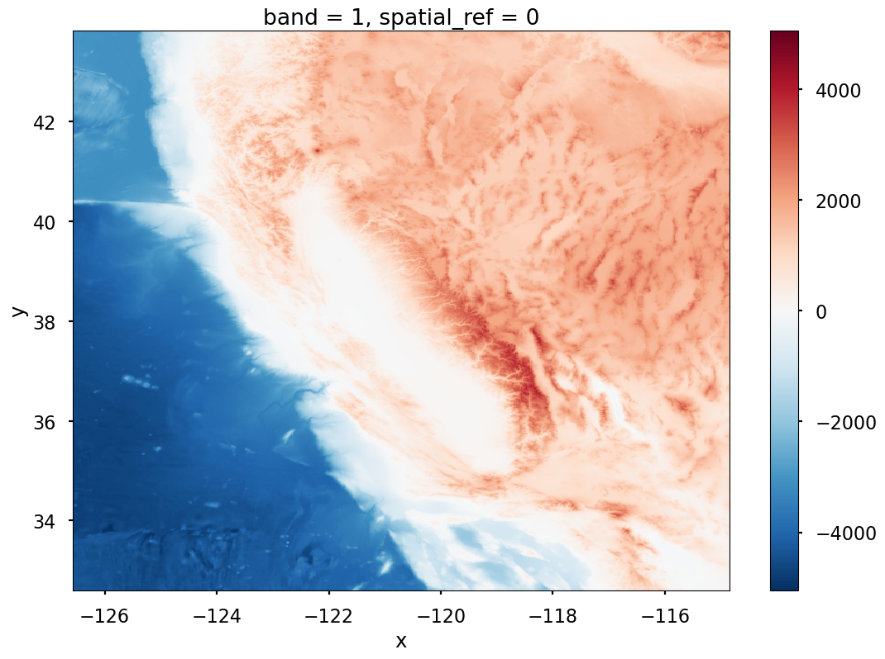
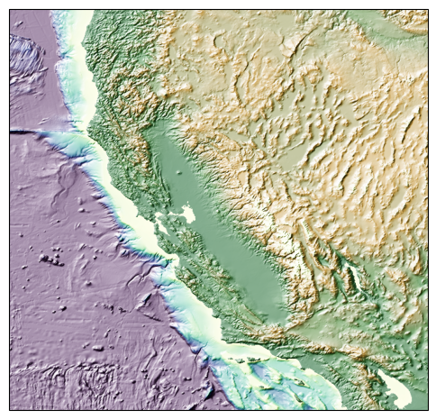

Lesson 13, Workalong 02: Plotting geospatial data#
This workalong shows how to use rioxarray to read a raster file (a GeoTIFF in this case) to add topography to our plot. It also shows some tricks for getting good-looking topo plots.
""" Import libraries """
import matplotlib.pyplot as plt
import geopandas as gpd
import matplotlib as mpl
import rioxarray
import cartopy
import numpy as np
import cmocean
mpl.style.use('seaborn-v0_8-poster')
""" Load the earthquake data from the earlier exercise. """
# set the ca earthquake data path
data_file = "ca_earthquakes.shp.zip"
# read in the data
ca_eq = gpd.read_file(data_file)
ca_eq.plot();
---------------------------------------------------------------------------
DataSourceError Traceback (most recent call last)
Cell In[2], line 7
4 data_file = "ca_earthquakes.shp.zip"
6 # read in the data
----> 7 ca_eq = gpd.read_file(data_file)
9 ca_eq.plot();
File /N/project/easg690_fall2025/student_work_dirs/obrienta/advanced_earth_science_data_analysis/.venv/lib/python3.12/site-packages/geopandas/io/file.py:316, in _read_file(filename, bbox, mask, columns, rows, engine, **kwargs)
313 filename = response.read()
315 if engine == "pyogrio":
--> 316 return _read_file_pyogrio(
317 filename, bbox=bbox, mask=mask, columns=columns, rows=rows, **kwargs
318 )
320 elif engine == "fiona":
321 if pd.api.types.is_file_like(filename):
File /N/project/easg690_fall2025/student_work_dirs/obrienta/advanced_earth_science_data_analysis/.venv/lib/python3.12/site-packages/geopandas/io/file.py:576, in _read_file_pyogrio(path_or_bytes, bbox, mask, rows, **kwargs)
567 warnings.warn(
568 "The 'include_fields' and 'ignore_fields' keywords are deprecated, and "
569 "will be removed in a future release. You can use the 'columns' keyword "
(...) 572 stacklevel=3,
573 )
574 kwargs["columns"] = kwargs.pop("include_fields")
--> 576 return pyogrio.read_dataframe(path_or_bytes, bbox=bbox, **kwargs)
File /N/project/easg690_fall2025/student_work_dirs/obrienta/advanced_earth_science_data_analysis/.venv/lib/python3.12/site-packages/pyogrio/geopandas.py:275, in read_dataframe(path_or_buffer, layer, encoding, columns, read_geometry, force_2d, skip_features, max_features, where, bbox, mask, fids, sql, sql_dialect, fid_as_index, use_arrow, on_invalid, arrow_to_pandas_kwargs, **kwargs)
270 if not use_arrow:
271 # For arrow, datetimes are read as is.
272 # For numpy IO, datetimes are read as string values to preserve timezone info
273 # as numpy does not directly support timezones.
274 kwargs["datetime_as_string"] = True
--> 275 result = read_func(
276 path_or_buffer,
277 layer=layer,
278 encoding=encoding,
279 columns=columns,
280 read_geometry=read_geometry,
281 force_2d=gdal_force_2d,
282 skip_features=skip_features,
283 max_features=max_features,
284 where=where,
285 bbox=bbox,
286 mask=mask,
287 fids=fids,
288 sql=sql,
289 sql_dialect=sql_dialect,
290 return_fids=fid_as_index,
291 **kwargs,
292 )
294 if use_arrow:
295 import pyarrow as pa
File /N/project/easg690_fall2025/student_work_dirs/obrienta/advanced_earth_science_data_analysis/.venv/lib/python3.12/site-packages/pyogrio/raw.py:198, in read(path_or_buffer, layer, encoding, columns, read_geometry, force_2d, skip_features, max_features, where, bbox, mask, fids, sql, sql_dialect, return_fids, datetime_as_string, **kwargs)
59 """Read OGR data source into numpy arrays.
60
61 IMPORTANT: non-linear geometry types (e.g., MultiSurface) are converted
(...) 194
195 """
196 dataset_kwargs = _preprocess_options_key_value(kwargs) if kwargs else {}
--> 198 return ogr_read(
199 get_vsi_path_or_buffer(path_or_buffer),
200 layer=layer,
201 encoding=encoding,
202 columns=columns,
203 read_geometry=read_geometry,
204 force_2d=force_2d,
205 skip_features=skip_features,
206 max_features=max_features or 0,
207 where=where,
208 bbox=bbox,
209 mask=_mask_to_wkb(mask),
210 fids=fids,
211 sql=sql,
212 sql_dialect=sql_dialect,
213 return_fids=return_fids,
214 dataset_kwargs=dataset_kwargs,
215 datetime_as_string=datetime_as_string,
216 )
File pyogrio/_io.pyx:1293, in pyogrio._io.ogr_read()
File pyogrio/_io.pyx:232, in pyogrio._io.ogr_open()
DataSourceError: ca_earthquakes.shp.zip: No such file or directory
""" Load the topo / bathymetry data. """
# set the filepath
topo_bathy_path = "https://github.com/taobrienlbl/advanced_earth_science_data_analysis/raw/09188e9e6a0cf230f8473c0ae95d2e1b9079df3a/lessons/13_geospatial_intro/data/western_us_topo_bathy_subset.tiff"
# read in the data
topo_bathy_rxr = rioxarray.open_rasterio(topo_bathy_path)
topo_bathy_rxr.plot();

""" Generate a plot of earthquake locations on top of the topography / bathymetry data. """
# set the projection
projection = cartopy.crs.PlateCarree()
# create a figure and axis
fig, ax = plt.subplots(figsize=(6,6), subplot_kw=dict(projection=projection))
# get the projection as a PROJ4 string
proj4 = projection.proj4_init
# ******************************************
# create a hillshade of the topo/bathy data
# ******************************************
# set the light source
ls = mpl.colors.LightSource(azdeg=315, altdeg=45)
# reproject the topo bathy data
topo_bathy_rxr_proj = topo_bathy_rxr.rio.reproject(proj4)
# get the x and y gridspacing
dx = abs(topo_bathy_rxr_proj.x.diff('x').values[0])
dy = abs(topo_bathy_rxr_proj.y.diff('y').values[0])
rearth = 6.371e6 # earth radius [m]
dx_meters = np.deg2rad(dx) * rearth * np.cos(np.deg2rad(topo_bathy_rxr.y.mean().values))
dy_meters = np.deg2rad(dy) * rearth
# generate a blended hillshade
blend = ls.shade(
topo_bathy_rxr_proj.squeeze().values,
dx=dx_meters, dy=dy_meters,
vert_exag=10,
cmap=cmocean.cm.topo,
blend_mode='hsv',
vmin = -3000, vmax = 3000,
)
# get the extent of the data
left, bottom, right, top = topo_bathy_rxr_proj.rio.bounds()
# set the plot extent
ax.set_extent([left, right, bottom, top], crs=projection)
# plot the hillshade
ax.imshow(blend, extent=[left, right, bottom, top], transform=projection)
# *************************
# plot the earthquake data
# *************************
# ********************
# geographic features
# ********************
plt.show()
